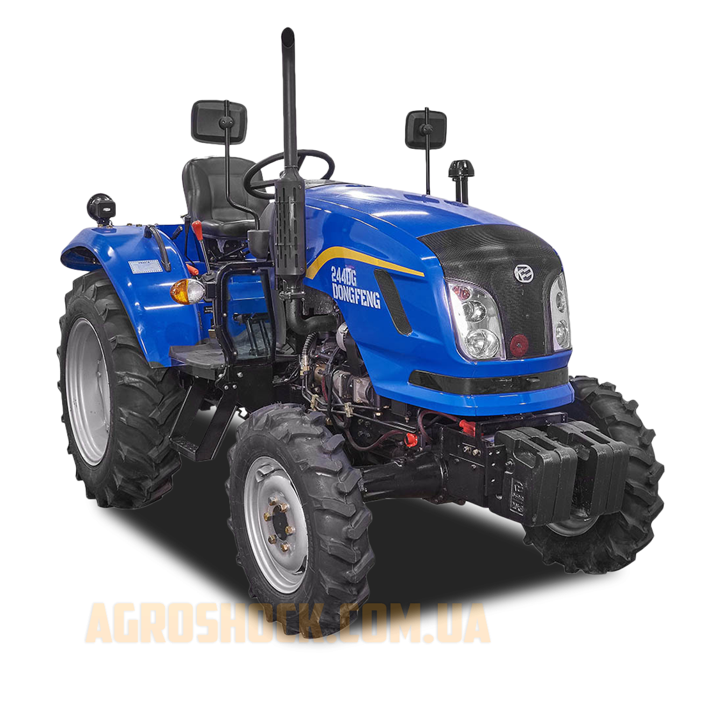

Характеристики:
- Двигун: 4-циліндровий, дизельний
- Потужність: 40 к.с
- Привід: Повний (4x4)
- Система охолодження: Водяне рідинне охолодження
- Трансмісія: Механічна, 8 передач вперед та 2 назад
- Гідравлічна система: Є, з можливістю підключення навісного обладнання
- Колісна база: 1780 мм
- Вага: 1550 кг
- Максимальна швидкість: до 35 км/год
- Паливний бак: 29 літрів
- Колеса: Передні 7.5-16, задні 12.4-24
- Кабіна: Є, з захистом від пилу та кондиціонером
- Гальмівна система: Дискові гальма в масляній ванні
- Додаткове обладнання: Можливість встановлення фронтального навантажувача
- Тип рами: Посилена рама для важких умов роботи
- Охолоджувач: Наявність охолоджувача повітря
- Витрата пального: 8 л/год при максимальному навантаженні
Про товар:
Трактор Донгфенг 404 ДГ - це потужний та універсальний агрегат, ідеальний для виконання різноманітних сільськогосподарських завдань. Завдяки дизельному 4-циліндровому двигуну та високій потужності в 40 кінських сил, трактор здатний працювати в складних умовах з високим навантаженням. Це ідеальний вибір для аграріїв, які потребують потужного, але доступного рішення для роботи в полі.
Вартість оренди: 1000 UAH за день